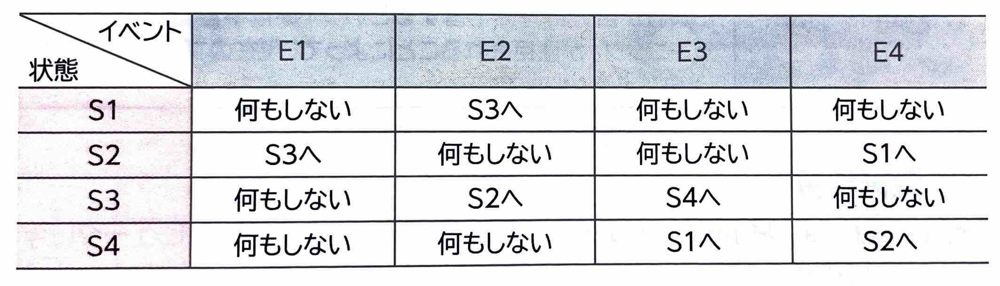
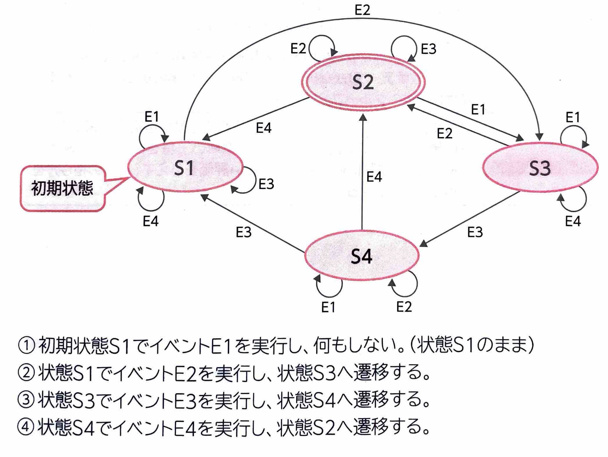

【 オートマトン 】
表示
｢オートマトン｣
とは、コンピュータに形式言語で記述された文を入力して結果を出力するための仮想的な機械概念のことです。オートマトンの中で、状態と入力した値の組み合わせが有限個のものを｢有限オートマトン｣
といいます。
(1)状態遷移表
オートマトンは、形式言語で記述された文を入力して結果を出力するまでの状態を｢初期状態｣
、｢中間状態｣
、｢最終状態｣
の3つに分類します。初期状態はひとつだけで、中間状態と最終状態は複数の場合があります。｢状態遷移表｣
とは、この状態の遷移を表したものです。
縦軸は現在の状態を表し、横軸はイベントを表します。交差する箇所の各マスには、ある状態において、イベントを実行することによって遷移する状態を記述します。
例えば、状態をS1~S4、イベントをE1~E4とする次の状態遷移表では、状態S1でイベントE1を実行しても何もしませんが、状態S1でイベントE2を実行すると状態S3へ遷移します。

(2)状態遷移図
｢状態遷移図｣
とは、オートマトンの状態の遷移を図で表したものです。
初期状態と中間状態を円、最終状態を二重の円で表します。遷移を矢印で表し、矢印の上にイベントを記述します。
例えば、初期状態をS1とし、イベントをE1→E2→E3→E4の順で実行する場合、次のように遷移して最終状態がS2となります。
